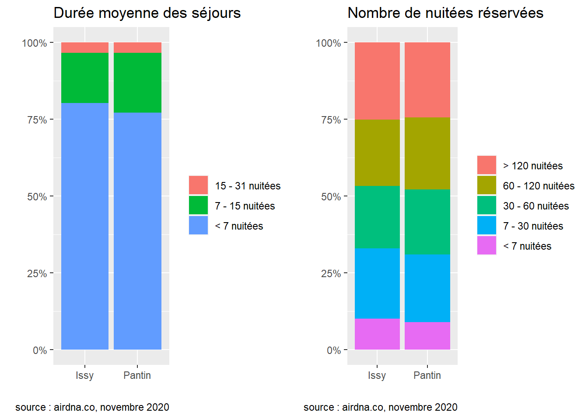
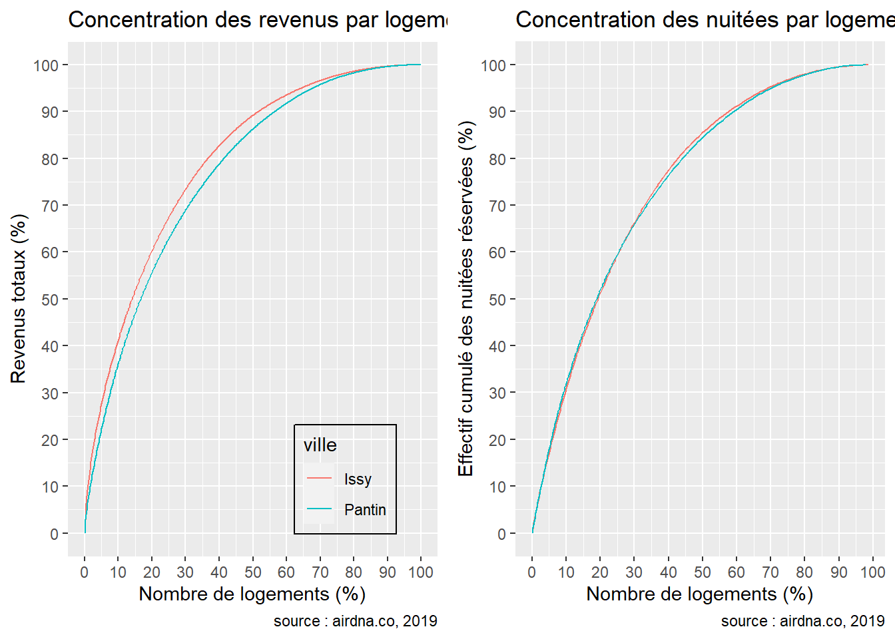
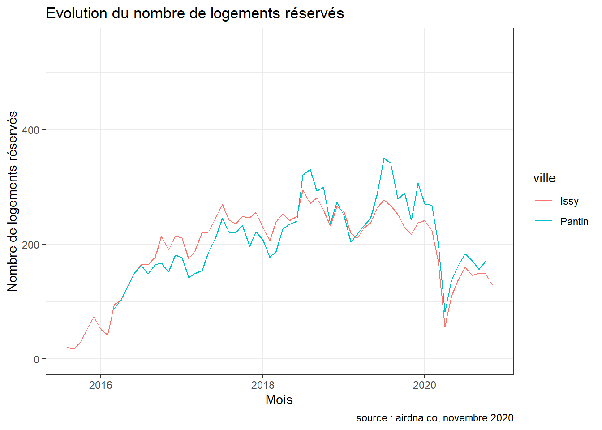
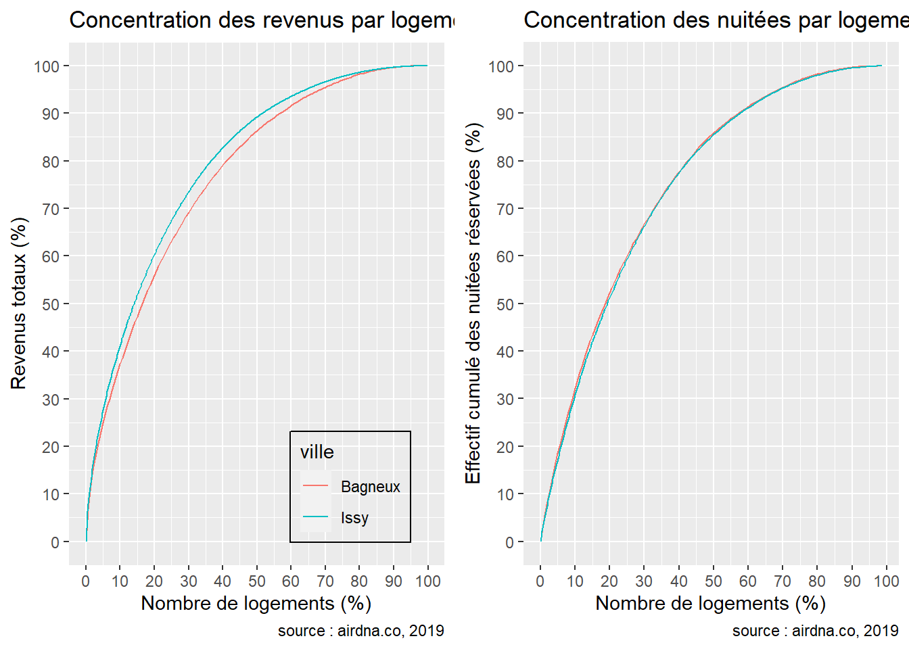
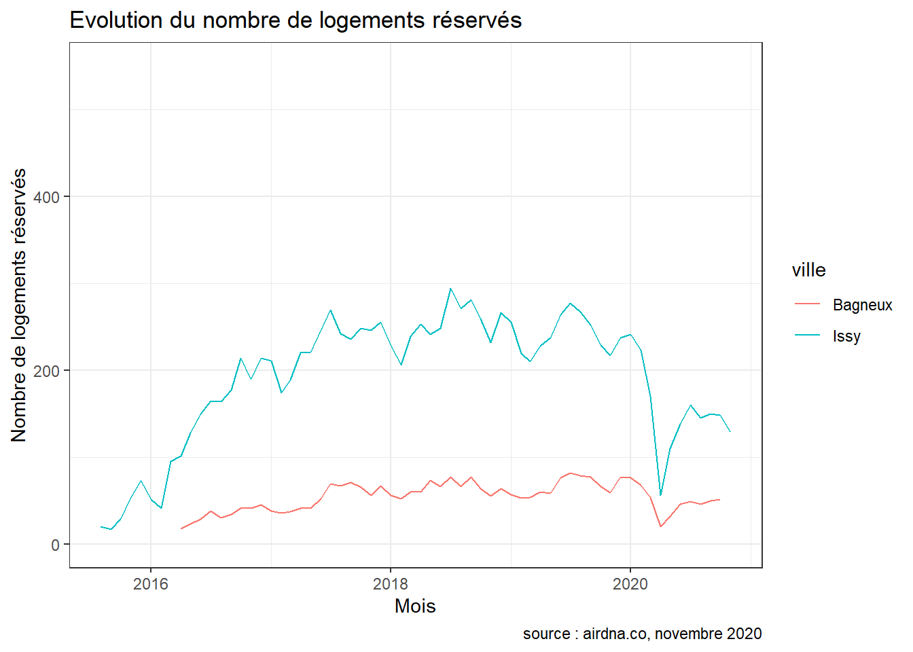
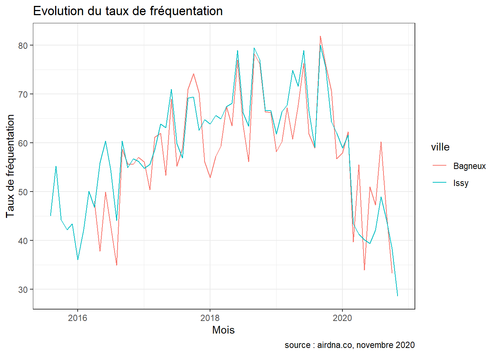
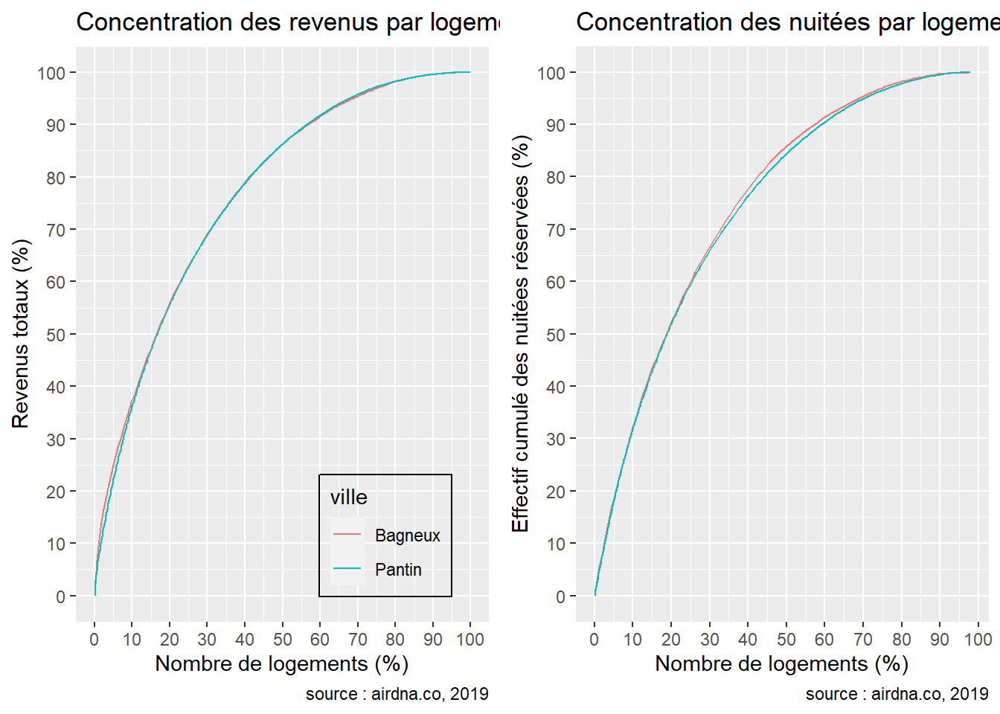
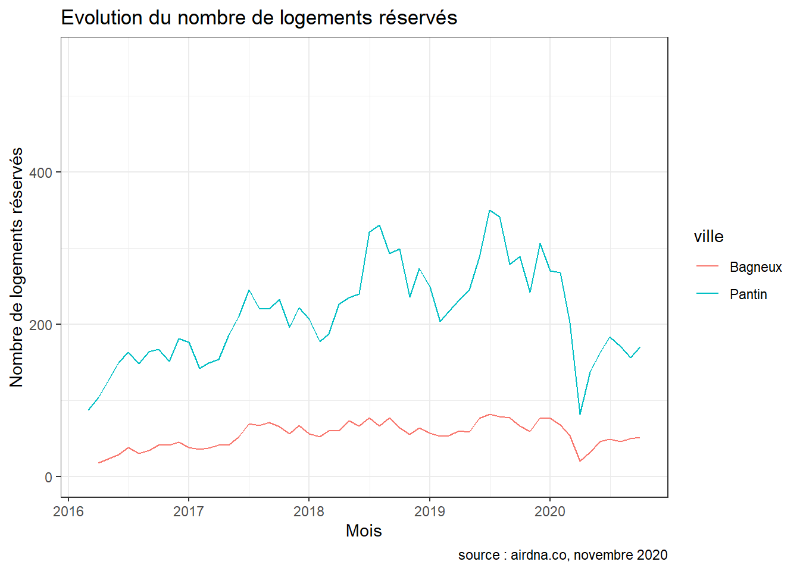

Comparaison inter-communes
Cette partie permet de mettre en vis-à-vis les performances d’Airbnb entre deux communes. La superposition d’indicateurs et de courbes permet de mieux détecter les similitudes ou bien les différences entre plusieurs marchés. Les indicateurs utilisés sont pour la plupart les mêmes que pour la partie précédente, avec une analyse plus approfondie de la période correspondant à la reprise de l’activité post-Covid. L’hypothèse est la suivante : l’activité d’Airbnb dépend des contextes locaux des communes. Ainsi, Issy-les-Moulineaux et Pantin, bien que limitrophes, ne présentent pas les mêmes caractéristiques en terme de fréquentation touristique. En effet, Issy-les-Moulineaux est l’une des premières communes où les restrictions en terme de nombre de nuitées réservées sont apparues, tandis que Pantin a fait depuis plusieurs décennies l’objet de grandes opérations de rénovations urbaines, notamment en ce qui concerne l’immobilier.
Le code R qui a permis de générer les représentations graphiques et tableaux est affiché pour la première comparaison communale. Il est exactement identique pour les deux autres commparaisons, à l’exception de l’import des données.
library(knitr) # Générer des rapports automatisés
library(rmdformats) # Format du document markdown
library(readr) # Import de fichiers csv
library(dplyr) # Manipulation de dataframes
library(tidyr) # pareil
library(ggplot2) # Production de graphiques
library(sf) # Opérations de géotraitement
library(RColorBrewer) # Palettes de couleurs
library(kableExtra) # Faire des beau tableaux1 Pantin - Issy
# seuls les paramètres de ce chunk sont à changer
periode <- 2019
periode2 <- 2020
com1_nom <- "Pantin"
com2_nom <- "Issy"
com1_codeinsee <- 93055
com2_codeinsee <- 92040
com1 <- read_csv("data/consolidated/Pantin_individuel.csv")
com1_mensuel <- read_csv("data/consolidated/Pantin_mensuel.csv")
com1_sf <- st_read("data/consolidated/Pantin.gpkg", layer = "Pantin_individuel_sf", quiet = TRUE)
com1_hotel <- read_csv("data/insee/hotels_Pantin.csv")
com1_log <- read_csv("data/insee/log_Pantin.csv")
com2 <- read_csv("data/consolidated/Issy_individuel.csv")
com2_mensuel <- read_csv("data/consolidated/Issy_mensuel.csv")
com2_sf <- st_read("data/consolidated/Issy.gpkg", layer = "Issy_individuel_sf", quiet = TRUE)
com2_hotel <- read_csv("data/insee/hotels_Issy.csv")
com2_log <- read_csv("data/insee/log_Issy.csv")# On ajoute le nom de la ville et on stocke les tableaux de départ dans des dataframes ref
com1$ville <- com1_nom
com1_mensuel$ville <- com1_nom
com2$ville <- com2_nom
com2_mensuel$ville <- com2_nom
com1_ref <- com1
com1_mensuel_ref <- com1_mensuel
com2_ref <- com2
com2_mensuel_ref <- com2_mensuel# On ne sélectionne que l'année 2019
com1_mensuel <- com1_mensuel %>% filter(year == periode)
com1 <- com1_mensuel %>% select(-mois, -`Occupancy Rate`, -Active, -year, -month, -day,
-activite, -actif, -duree, -tauxfreq)
com1 <- com1 %>% group_by(id_logement) %>%
summarise(type = type, rev_tot = sum(revenus_mois), rev_nuitee = mean(revenus_nuitee, na.rm = TRUE),
nb_resa = sum(nb_resa), nb_nuitees = sum(nb_nuitees), nb_dispo = sum(nb_dispo),
nb_bloques = sum(nb_bloques), Latitude = Latitude, Longitude = Longitude,
id_hote = id_hote)
com1 <- com1 %>% unique()
# réestimation du taux de fréquentation et de la durée des séjours
com1$tauxfreq <- com1$nb_nuitees / (com1$nb_nuitees + com1$nb_dispo)
com1$tauxfreq <- com1$tauxfreq %>% round(digits = 2)
com1$duree <- com1$nb_nuitees / com1$nb_resa
com1$duree <- com1$duree %>% round(digits = 2)
# ajout de la colonne prix et prixpers via le tableau individuel_clean
com1 <- merge(com1, com1_ref, by = "id_logement", all.x = TRUE)
com1 <- com1 %>% select(id_logement, type.x, rev_tot, rev_nuitee, nb_resa, nb_nuitees.x, nb_dispo.x,
Latitude.x, Longitude.x, id_hote.x, tauxfreq.x, duree, Freq, titre, debut,
prix, prixpers, Amenities, licence, multi, duree_min, ville)
com1 <- com1 %>% rename("type" = "type.x", "nb_nuitees" = "nb_nuitees.x",
"nb_dispo" = "nb_dispo.x", "latitude" = "Latitude.x",
"longitude" = "Longitude.x", "id_hote" = "id_hote.x",
"tauxfreq" = "tauxfreq.x")
com1 <- com1 %>% filter(!is.na(prix))
# on transforme en objet sf en joignant l'id carre
join <- com1_sf %>% select(id_logement, id_carre, id_iris)
com1_sf <- left_join(com1, join, by = "id_logement")
com1_sf <- com1_sf %>% select(-geom)
com1_sf <- st_as_sf(com1_sf, coords = c("longitude", "latitude"), crs = 4326)
# même manip pour la com2
com2_mensuel <- com2_mensuel %>% filter(year == periode)
com2 <- com2_mensuel %>% select(-mois, -`Occupancy Rate`, -Active, -year, -month, -day,
-activite, -actif, -duree, -tauxfreq)
com2 <- com2 %>% group_by(id_logement) %>%
summarise(type = type, rev_tot = sum(revenus_mois), rev_nuitee = mean(revenus_nuitee, na.rm = TRUE),
nb_resa = sum(nb_resa), nb_nuitees = sum(nb_nuitees), nb_dispo = sum(nb_dispo),
nb_bloques = sum(nb_bloques), Latitude = Latitude, Longitude = Longitude,
id_hote = id_hote)
com2 <- com2 %>% unique()
com2$tauxfreq <- com2$nb_nuitees / (com2$nb_nuitees + com2$nb_dispo)
com2$tauxfreq <- com2$tauxfreq %>% round(digits = 2)
com2$duree <- com2$nb_nuitees / com2$nb_resa
com2$duree <- com2$duree %>% round(digits = 2)
com2 <- merge(com2, com2_ref, by = "id_logement", all.x = TRUE)
com2 <- com2 %>% select(id_logement, type.x, rev_tot, rev_nuitee, nb_resa, nb_nuitees.x, nb_dispo.x,
Latitude.x, Longitude.x, id_hote.x, tauxfreq.x, duree, Freq, titre, debut,
prix, prixpers, Amenities, licence, multi, duree_min, ville)
com2 <- com2 %>% rename("type" = "type.x", "nb_nuitees" = "nb_nuitees.x",
"nb_dispo" = "nb_dispo.x", "latitude" = "Latitude.x",
"longitude" = "Longitude.x", "id_hote" = "id_hote.x",
"tauxfreq" = "tauxfreq.x")
com2 <- com2 %>% filter(!is.na(prix))
join <- com2_sf %>% select(id_logement, id_carre, id_iris)
com2_sf <- left_join(com2, join, by = "id_logement")
com2_sf <- com2_sf %>% select(-geom)
com2_sf <- st_as_sf(com2_sf, coords = c("longitude", "latitude"), crs = 4326)
rm(join)com1_actifs <- com1 %>% filter(nb_dispo > 0 | nb_nuitees > 0)
com1_reserves <- com1 %>% filter(nb_nuitees > 0 & nb_resa > 0)
com2_actifs <- com2 %>% filter(nb_dispo > 0 | nb_nuitees > 0)
com2_reserves <- com2 %>% filter(nb_nuitees > 0 & nb_resa > 0)# petites phrases pour les comparaisons
comparhotel <- " "
if(nrow(com1) > com1_hotel[1,12] & nrow(com2) > com2_hotel[1,12]){
comparhotel <- "Les deux communes comptent donc plus de logements Airbnb que de chambres d'hôtel."
} else if(nrow(com1) < com1_hotel[1,12] & nrow(com2) < com2_hotel[1,12]){
comparhotel <- "Les hôtels sont encore majoritaires dans les deux communes."
}Cette section a pour objectif de comparer les performances et l’activité des logements Airbnb entre deux communes données, ici Pantin et Issy. Ces deux communes concentrent respectivement 1238 et 1153 logements Airbnb en 2019, pour 609 et 848 chambres d’hôtel. Les deux communes comptent donc plus de logements Airbnb que de chambres d’hôtel. Les logements Airbnb représentent respectivement 4.7 et 3.2% de la totalité des logements des communes de Pantin et Issy.
# tableaux
nblog <- data.frame(matrix(ncol = 7, nrow = 3))
colnames(nblog) <- c(paste("Indicateur (", periode ,")"), com1_nom, com2_nom, com1_nom, com2_nom, com1_nom, com2_nom)
nblog[ ,1] <- c("Nombre total de logements", "Nombre de logements actifs", "Nombre de logements réservés")
nblog[1,2] <- nrow(com1)
nblog[2,2] <- nrow(com1_actifs)
nblog[3,2] <- nrow(com1_reserves)
nblog[1,3] <- nrow(com2)
nblog[2,3] <- nrow(com2_actifs)
nblog[3,3] <- nrow(com2_reserves)
nblog[1,4] <- nrow(com1 %>% filter(type == "Entire home/apt"))
nblog[2,4] <- nrow(com1_actifs %>% filter(type == "Entire home/apt"))
nblog[3,4] <- nrow(com1_reserves %>% filter(type == "Entire home/apt"))
nblog[1,5] <- nrow(com2 %>% filter(type == "Entire home/apt"))
nblog[2,5] <- nrow(com2_actifs %>% filter(type == "Entire home/apt"))
nblog[3,5] <- nrow(com2_reserves %>% filter(type == "Entire home/apt"))
nblog[1,6] <- nrow(com1 %>% filter(type == "Private room"))
nblog[2,6] <- nrow(com1_actifs %>% filter(type == "Private room"))
nblog[3,6] <- nrow(com1_reserves %>% filter(type == "Private room"))
nblog[1,7] <- nrow(com2 %>% filter(type == "Private room"))
nblog[2,7] <- nrow(com2_actifs %>% filter(type == "Private room"))
nblog[3,7] <- nrow(com2_reserves %>% filter(type == "Private room"))
nblog[2,1] <- paste0(nblog[2,1], footnote_marker_alphabet(1))
nblog[3,1] <- paste0(nblog[3,1], footnote_marker_alphabet(2))
kable(nblog, align = "c", escape = F) %>%
kable_paper(full_width = F) %>%
footnote(alphabet = c("Un logement est considéré comme actif s'il a été proposé au moins une nuitée sur l'année", "Un logement est considéré comme réservé s'il a enregistré au moins une réservation au cours de l'année")) %>%
add_header_above(header = c(" " = 1, "Tous les logements" = 2, "Logements entiers" = 2,
"Chambres privées" = 2)) %>%
column_spec(1, bold = TRUE)|
Tous les logements
|
Logements entiers
|
Chambres privées
|
||||
|---|---|---|---|---|---|---|
| Indicateur ( 2019 ) | Pantin | Issy | Pantin | Issy | Pantin | Issy |
| Nombre total de logements | 1238 | 1153 | 918 | 929 | 288 | 204 |
| Nombre de logements actifsa | 898 | 779 | 676 | 622 | 204 | 144 |
| Nombre de logements réservésb | 650 | 575 | 493 | 468 | 147 | 98 |
| a Un logement est considéré comme actif s’il a été proposé au moins une nuitée sur l’année | ||||||
| b Un logement est considéré comme réservé s’il a enregistré au moins une réservation au cours de l’année | ||||||
comparlog <- " "
taux_com1 <- (nrow(com1_reserves) * 100 / nrow(com1_actifs)) %>% round(digits = 2)
taux_com2 <- (nrow(com2_reserves) * 100 / nrow(com2_actifs)) %>% round(digits = 2)
if(taux_com1 > taux_com2){
comparlog <- paste0(com1_nom, " (", taux_com1, "%) contre ", taux_com2, "% dans la commune de ", com2_nom)
} else {
comparlog <- paste0(com2_nom, " (", taux_com2, "%) contre ", taux_com1, "% dans la commune de ", com1_nom)
}
comparprix <- " "
pluscher <- (max(mean(com1_reserves$prixpers), mean(com2_reserves$prixpers))) %>% round(digits = 0)
moinscher <- (min(mean(com1_reserves$prixpers), mean(com2_reserves$prixpers))) %>% round(digits = 0)
ville_pluschere <- " "
ville_moinschere <- " "
if (mean(com1_reserves$prixpers) > mean(com2_reserves$prixpers)){
ville_pluschere <- com1_nom
ville_moinschere <- com2_nom
} else {
ville_pluschere <- com2_nom
ville_moinschere <- com1_nom
}
if(pluscher / moinscher > 1.5){
comparprix <- paste0("forte différence entre le prix moyen pratiqué entre les communes : il est de ", pluscher, "$ à ", ville_pluschere, " contre ", moinscher, "$ à ", ville_moinschere)
} else if(pluscher / moinscher < 1.1){
comparprix <- paste0("très légère différence entre le prix moyen pratiqué entre les communes : il est de ", pluscher, "$ à ", ville_pluschere, " contre ", moinscher, "$ à ", ville_moinschere)
} else if((pluscher / moinscher) > 1.1 & (pluscher / moinscher) < 1.5){
comparprix <- paste0("différence sensible entre le prix moyen pratiqué entre les communes : il est de ", pluscher, "$ à ", ville_pluschere, " contre ", moinscher, "$ à ", ville_moinschere)
}Le tableau suivant prend comme stock de référence les logements réservés. Le taux d’activité (nombre de logements réservés par rapport au nombre de logements actifs) est plus élevé dans la commune de Issy (73.81%) contre 72.38% dans la commune de Pantin. On observe une différence sensible entre le prix moyen pratiqué entre les communes : il est de 35$ à Issy contre 25$ à Pantin.
# ajouter taux d'activité
options(scipen = 3)
entire_com1 <- com1_reserves %>% filter(type == "Entire home/apt")
private_com1 <- com1_reserves %>% filter(type == "Private room")
entire_com2 <- com2_reserves %>% filter(type == "Entire home/apt")
private_com2 <- com2_reserves %>% filter(type == "Private room")
indicateur <- data.frame(matrix(ncol = 7, nrow = 11))
colnames(indicateur) <- c(paste("Indicateur (", periode ,")"), com1_nom, com2_nom, com1_nom, com2_nom, com1_nom, com2_nom)
indicateur[ ,1] <- c("Taux d'activité (%)", "Prix par personne moyen", "Taux de fréquentation moyen (%)", "Nombre moyen de nuitées disponibles", "Nombre moyen de nuitées réservées", "Part de logements loués fréquemment (>= 120 nuitées)", "Part de logements loués occasionnellement (<= 7 nuitées)", "Part des séjours de moins de 7 jours", "Part des séjours de 15 jours ou plus", "Part de logements détenus par des multiloueurs", "Revenu médian engendré par logement ($)")
indicateur[1,2] <- nrow(com1_reserves) * 100 / nrow(com1_actifs)
indicateur[1,3] <- nrow(com2_reserves) * 100 / nrow(com2_actifs)
indicateur[1,4] <- nrow(entire_com1) * 100 / nrow(com1_actifs %>% filter(type == "Entire home/apt"))
indicateur[1,5] <- nrow(entire_com2) * 100 / nrow(com2_actifs %>% filter(type == "Entire home/apt"))
indicateur[1,6] <- nrow(private_com1) * 100 / nrow(com1_actifs %>% filter(type == "Private room"))
indicateur[1,7] <- nrow(private_com2) * 100 / nrow(com2_actifs %>% filter(type == "Private room"))
indicateur[2,2] <- mean(com1_reserves$prixpers)
indicateur[2,3] <- mean(com2_reserves$prixpers)
indicateur[2,4] <- mean(entire_com1$prixpers)
indicateur[2,5] <- mean(entire_com2$prixpers)
indicateur[2,6] <- mean(private_com1$prixpers)
indicateur[2,7] <- mean(private_com2$prixpers)
indicateur[3,2] <- sum(com1_reserves$nb_nuitees) * 100 / (sum(com1_reserves$nb_nuitees) + sum(com1_reserves$nb_dispo))
indicateur[3,3] <- sum(com2_reserves$nb_nuitees) * 100 / (sum(com2_reserves$nb_nuitees) + sum(com2_reserves$nb_dispo))
indicateur[3,4] <- sum(entire_com1$nb_nuitees) * 100 / (sum(entire_com1$nb_nuitees) + sum(entire_com1$nb_dispo))
indicateur[3,5] <- sum(entire_com2$nb_nuitees) * 100 / (sum(entire_com2$nb_nuitees) + sum(entire_com2$nb_dispo))
indicateur[3,6] <- sum(private_com1$nb_nuitees) * 100 / (sum(private_com1$nb_nuitees) + sum(private_com1$nb_dispo))
indicateur[3,7] <- sum(private_com2$nb_nuitees) * 100 / (sum(private_com2$nb_nuitees) + sum(private_com2$nb_dispo))
indicateur[4,2] <- mean(com1_reserves$nb_dispo + com1_reserves$nb_nuitees)
indicateur[4,3] <- mean(com2_reserves$nb_dispo + com2_reserves$nb_nuitees)
indicateur[4,4] <- mean(entire_com1$nb_dispo + entire_com1$nb_nuitees)
indicateur[4,5] <- mean(entire_com2$nb_dispo + entire_com2$nb_nuitees)
indicateur[4,6] <- mean(private_com1$nb_dispo + private_com1$nb_nuitees)
indicateur[4,7] <- mean(private_com2$nb_dispo + private_com2$nb_nuitees)
indicateur[5,2] <- mean(com1_reserves$nb_nuitees)
indicateur[5,3] <- mean(com2_reserves$nb_nuitees)
indicateur[5,4] <- mean(entire_com1$nb_nuitees)
indicateur[5,5] <- mean(entire_com2$nb_nuitees)
indicateur[5,6] <- mean(private_com1$nb_nuitees)
indicateur[5,7] <- mean(private_com2$nb_nuitees)
indicateur[6,2] <- nrow(com1_reserves %>% filter(nb_nuitees >= 120)) * 100 / nrow(com1_reserves)
indicateur[6,3] <- nrow(com2_reserves %>% filter(nb_nuitees >= 120)) * 100 / nrow(com2_reserves)
indicateur[6,4] <- nrow(entire_com1 %>% filter(nb_nuitees >= 120)) * 100 / nrow(entire_com1)
indicateur[6,5] <- nrow(entire_com2 %>% filter(nb_nuitees >= 120)) * 100 / nrow(entire_com2)
indicateur[6,6] <- nrow(private_com1 %>% filter(nb_nuitees >= 120)) * 100 / nrow(private_com1)
indicateur[6,7] <- nrow(private_com2 %>% filter(nb_nuitees >= 120)) * 100 / nrow(private_com2)
indicateur[7,2] <- nrow(com1_reserves %>% filter(nb_nuitees <= 7)) * 100 / nrow(com1_reserves)
indicateur[7,3] <- nrow(com2_reserves %>% filter(nb_nuitees <= 7)) * 100 / nrow(com2_reserves)
indicateur[7,4] <- nrow(entire_com1 %>% filter(nb_nuitees <= 7)) * 100 / nrow(entire_com1)
indicateur[7,5] <- nrow(entire_com2 %>% filter(nb_nuitees <= 7)) * 100 / nrow(entire_com2)
indicateur[7,6] <- nrow(private_com1 %>% filter(nb_nuitees <= 7)) * 100 / nrow(private_com1)
indicateur[7,7] <- nrow(private_com2 %>% filter(nb_nuitees <= 7)) * 100 / nrow(private_com2)
indicateur[8,2] <- nrow(com1_reserves %>% filter(duree < 7)) * 100 / nrow(com1_reserves)
indicateur[8,3] <- nrow(com2_reserves %>% filter(duree < 7)) * 100 / nrow(com2_reserves)
indicateur[8,4] <- nrow(entire_com1 %>% filter(duree < 7)) * 100 / nrow(entire_com1)
indicateur[8,5] <- nrow(entire_com2 %>% filter(duree < 7)) * 100 / nrow(entire_com2)
indicateur[8,6] <- nrow(private_com1 %>% filter(duree < 7)) * 100 / nrow(private_com1)
indicateur[8,7] <- nrow(private_com2 %>% filter(duree < 7)) * 100 / nrow(private_com2)
indicateur[9,2] <- nrow(com1_reserves %>% filter(duree >= 15)) * 100 / nrow(com1_reserves)
indicateur[9,3] <- nrow(com2_reserves %>% filter(duree >= 15)) * 100 / nrow(com2_reserves)
indicateur[9,4] <- nrow(entire_com1 %>% filter(duree >= 15)) * 100 / nrow(entire_com1)
indicateur[9,5] <- nrow(entire_com2 %>% filter(duree >= 15)) * 100 / nrow(entire_com2)
indicateur[9,6] <- nrow(private_com1 %>% filter(duree >= 15)) * 100 / nrow(private_com1)
indicateur[9,7] <- nrow(private_com2 %>% filter(duree >= 15)) * 100 / nrow(private_com2)
indicateur[10,2] <- nrow(com1_reserves %>% filter(multi == TRUE)) * 100 / nrow(com1_reserves)
indicateur[10,3] <- nrow(com2_reserves %>% filter(multi == TRUE)) * 100 / nrow(com2_reserves)
indicateur[10,4] <- nrow(entire_com1 %>% filter(multi == TRUE)) * 100 / nrow(entire_com1)
indicateur[10,5] <- nrow(entire_com2 %>% filter(multi == TRUE)) * 100 / nrow(entire_com2)
indicateur[10,6] <- nrow(private_com1 %>% filter(multi == TRUE)) * 100 / nrow(private_com1)
indicateur[10,7] <- nrow(private_com2 %>% filter(multi == TRUE)) * 100 / nrow(private_com2)
indicateur[11,2] <- median(com1_reserves$rev_tot)
indicateur[11,3] <- median(com2_reserves$rev_tot)
indicateur[11,4] <- median(entire_com1$rev_tot)
indicateur[11,5] <- median(entire_com2$rev_tot)
indicateur[11,6] <- median(private_com1$rev_tot)
indicateur[11,7] <- median(private_com2$rev_tot)
kable(indicateur, digits = 0, booktabs = TRUE) %>%
kable_paper(full_width = F) %>%
add_header_above(header = c(" " = 1, "Tous les logements" = 2, "Logements entiers" = 2,
"Chambres privées" = 2)) %>%
column_spec(1, bold = TRUE)|
Tous les logements
|
Logements entiers
|
Chambres privées
|
||||
|---|---|---|---|---|---|---|
| Indicateur ( 2019 ) | Pantin | Issy | Pantin | Issy | Pantin | Issy |
| Taux d’activité (%) | 72 | 74 | 73 | 75 | 72 | 68 |
| Prix par personne moyen | 25 | 35 | 25 | 34 | 25 | 37 |
| Taux de fréquentation moyen (%) | 57 | 55 | 61 | 58 | 50 | 44 |
| Nombre moyen de nuitées disponibles | 146 | 146 | 133 | 143 | 182 | 164 |
| Nombre moyen de nuitées réservées | 83 | 80 | 81 | 83 | 91 | 73 |
| Part de logements loués fréquemment (>= 120 nuitées) | 24 | 25 | 24 | 26 | 27 | 26 |
| Part de logements loués occasionnellement (<= 7 nuitées) | 9 | 10 | 9 | 9 | 9 | 15 |
| Part des séjours de moins de 7 jours | 75 | 79 | 74 | 79 | 78 | 84 |
| Part des séjours de 15 jours ou plus | 4 | 4 | 5 | 3 | 1 | 3 |
| Part de logements détenus par des multiloueurs | 30 | 27 | 24 | 21 | 47 | 52 |
| Revenu médian engendré par logement ($) | 3714 | 4393 | 4050 | 5474 | 2867 | 2502 |
sejours_com1 <- com1_reserves %>% select(nb_nuitees, duree, ville)
sejours_com2 <- com2_reserves %>% select(nb_nuitees, duree, ville)
sejours <- rbind(sejours_com1, sejours_com2)
sejours$nb_nuitees <- cut(sejours$nb_nuitees, c(0, 7, 30, 60, 120, 366), include.lowest = TRUE)
sejours$duree <- cut(sejours$duree, c(0, 7, 15, 31), include.lowest = TRUE)
sejours$nb_nuitees <- as.character(sejours$nb_nuitees)
sejours$duree <- as.character(sejours$duree)
sejours$nb_nuitees[sejours$nb_nuitees == "[0,7]"] <- "< 7 nuitées"
sejours$nb_nuitees[sejours$nb_nuitees == "(7,30]"] <- "7 - 30 nuitées"
sejours$nb_nuitees[sejours$nb_nuitees == "(30,60]"] <- "30 - 60 nuitées"
sejours$nb_nuitees[sejours$nb_nuitees == "(60,120]"] <- "60 - 120 nuitées"
sejours$nb_nuitees[sejours$nb_nuitees == "(120,366]"] <- "> 120 nuitées"
sejours$duree[sejours$duree == "[0,7]"] <- "< 7 nuitées"
sejours$duree[sejours$duree == "(7,15]"] <- "7 - 15 nuitées"
sejours$duree[sejours$duree == "(15,31]"] <- "15 - 31 nuitées"
sejours$nb_nuitees <- factor(sejours$nb_nuitees, levels = c("> 120 nuitées", "60 - 120 nuitées", "30 - 60 nuitées", "7 - 30 nuitées", "< 7 nuitées"))
sejours$duree <- factor(sejours$duree, levels = c("15 - 31 nuitées", "7 - 15 nuitées", "< 7 nuitées"))
sejours_duree <- sejours %>% select(duree, ville)
sejours_nbnuitees <- sejours %>% select(nb_nuitees, ville)
plot_duree <- ggplot(data = sejours_duree, aes(x = ville)) +
geom_bar(aes(fill = duree), position = "fill") +
labs(title = "Durée moyenne des séjours",
x = "",
y = "",
fill = "",
caption = "source : airdna.co, novembre 2020") +
scale_y_continuous(labels = scales::percent)
plot_nuitees <- ggplot(data = sejours_nbnuitees, aes(x = ville)) +
geom_bar(aes(fill = nb_nuitees), position = "fill") +
labs(title = "Nombre de nuitées réservées",
x = "",
y = "",
fill = "",
caption = "source : airdna.co, novembre 2020") +
scale_y_continuous(labels = scales::percent)phrase_multi <- " "
if(indicateur[10,6] > indicateur[10,4] & indicateur[10,7] > indicateur[10,5]){
phrase_multi <- paste0("Les multiloueurs sont plus enclins à louer des chambres privées dans les deux communes : respectivement ", (indicateur[10,6]) %>% round(digits = 0), " et ", (indicateur[10,7]) %>% round(digits = 0), "% d'entre elles sont louées par des multiloueurs")
} else if(indicateur[10,6] < indicateur[10,4] & indicateur[10,7] < indicateur[10,5]){
phrase_multi <- paste0("Les multiloueurs sont plus enclins à louer des logements entiers dans les deux communes : respectivement ", (indicateur[10,4]) %>% round(digits = 0), " et ", (indicateur[10,5]) %>% round(digits = 0), "% d'entre elles sont louées par des multiloueurs")
} else if(indicateur[10,6] > indicateur[10,4] & indicateur[10,7] < indicateur[10,5]){
phrase_multi <- paste0("Les multiloueurs sont plus enclins à louer des chambres privées dans la commune de ", com1_nom, ", tandis qu'on observe l'effet inverse à ", com2_nom)
} else if(indicateur[10,6] < indicateur[10,4] & indicateur[10,7] > indicateur[10,5]){
phrase_multi <- paste0("Les multiloueurs sont plus enclins à louer des logements entiers dans la commune de ", com1_nom, ", tandis qu'on observe l'effet inverse à ", com2_nom)
} else {
phrase_multi <- "La part de logements détenus par des multiloueurs est la même, peu importe le type de logement"
}
phrase_revenus <- " "
plusriche <- (max(median(com1_reserves$rev_tot), median(com2_reserves$rev_tot))) %>% round(digits = 0)
moinsriche <- (min(median(com1_reserves$rev_tot), median(com2_reserves$rev_tot))) %>% round(digits = 0)
ville_plusriche <- " "
ville_moinsriche <- " "
if (median(com1_reserves$rev_tot) > median(com2_reserves$rev_tot)){
ville_plusriche <- com1_nom
ville_moinsriche <- com2_nom
} else {
ville_plusriche <- com2_nom
ville_moinsriche <- com1_nom
}
phrase <- ""
if(ville_pluschere == ville_plusriche){
phrase <- "la différence entre les prix pratiqués se répercute dans les revenus"
} else {
phrase <- "la ville qui pratique les prix les plus élevés n'est pas forcément celle où les hôtes engrangent le plus de revenus"
}La durée moyenne des séjours ainsi que le nombre total de nuitées réservées représentent des indicateurs intéressants de l’activité d’Airbnb dans une ville : on dénombre respectivement 75 et 79% de séjours courts, c’est-à-dire inférieurs à une semaine, et environ un quart des logements ont engrangé plus de 120 nuitées réservées dans les deux communes. Les multiloueurs sont plus enclins à louer des chambres privées dans les deux communes : respectivement 47 et 52% d’entre elles sont louées par des multiloueurs. Enfin, la différence entre les prix pratiqués se répercute dans les revenus : les logements Airbnb de la commune de Issy ont engrangé un revenu médian de 4393$ en 2019, contre 3714$ à Pantin, soit des revenus supérieurs de l’ordre de 18% à Issy.
library(gridExtra) # pour mettre 2 graphiques côte à côte
grid.arrange(plot_duree, plot_nuitees, ncol = 2)
breaks <- seq(0, max(com1_reserves$rev_tot), by = 1)
test <- com1_reserves
test$nb_log <- 1
test$intervalle <- findInterval(test$rev_tot, vec = breaks)
test$intervalle <- breaks[test$intervalle]
dist <- aggregate(test$rev_tot, by = list(test$intervalle), sum)
dist$freq <- cumsum(dist$x)
dist$nb_log <- dist$x / dist$Group.1
dist$cumul <- dist$freq/dist[nrow(dist), 3]* 100
dist$cumul <- dist$cumul %>% round(digits = 2)
dist$cumul_log <- cumsum(dist$nb_log)
dist$cumul_log <- dist$cumul_log / max(dist$cumul_log)
dist$cumul_log <- dist$cumul_log * 100
dist$cumul_log <- dist$cumul_log %>% round(digits = 2)
colnames(dist) <- c("rev_tot", "rev_tot_tot", "cumul", "nb_log", "cumulpct", "cumul_log")
dist$ville <- com1_nom
dist$cumulpct <- 100 -dist$cumulpct
dist$cumul_log <- 100 -dist$cumul_log
breaks2 <- seq(0, max(com2_reserves$rev_tot), by = 1)
test2 <- com2_reserves
test2$nb_log <- 1
test2$intervalle <- findInterval(test2$rev_tot, vec = breaks2)
test2$intervalle <- breaks2[test2$intervalle]
dist2 <- aggregate(test2$rev_tot, by = list(test2$intervalle), sum)
dist2$freq <- cumsum(dist2$x)
dist2$nb_log <- dist2$x / dist2$Group.1
dist2$cumul <- dist2$freq/dist2[nrow(dist2), 3]* 100
dist2$cumul <- dist2$cumul %>% round(digits = 2)
dist2$cumul_log <- cumsum(dist2$nb_log)
dist2$cumul_log <- dist2$cumul_log / max(dist2$cumul_log)
dist2$cumul_log <- dist2$cumul_log * 100
dist2$cumul_log <- dist2$cumul_log %>% round(digits = 2)
colnames(dist2) <- c("rev_tot", "rev_tot_tot", "cumul", "nb_log", "cumulpct", "cumul_log")
dist2$ville <- com2_nom
dist2$cumulpct <- 100 -dist2$cumulpct
dist2$cumul_log <- 100 -dist2$cumul_logcourbe <- rbind(dist, dist2)
plot1 <- ggplot(data = courbe, aes(x = cumul_log, y = cumulpct))+
geom_line(aes(color = ville)) +
labs(title = "Concentration des revenus par logements",
x = "Nombre de logements (%)",
y = "Revenus totaux (%)",
caption = paste("source : airdna.co,", periode)) +
scale_x_continuous(breaks = seq(0,100,10)) +
scale_y_continuous(breaks = seq(0,100,10)) +
theme(legend.position = c(0.75,0.15),
legend.background = element_rect(fill = NA),
legend.box.background = element_rect(fill = NA))breaks3 <- seq(0, max(com1_reserves$nb_nuitees), by = 1)
test3 <- com1_reserves
test3$nb_log <- 1
test3$intervalle <- findInterval(test3$nb_nuitees, vec = breaks3)
test3$intervalle <- breaks3[test3$intervalle]
dist3 <- aggregate(test3$nb_nuitees, by = list(test3$intervalle), sum)
dist3$freq <- cumsum(dist3$x)
dist3$nb_log <- dist3$x / dist3$Group.1
dist3$cumul <- dist3$freq/dist3[nrow(dist3), 3]* 100
dist3$cumul <- dist3$cumul %>% round(digits = 2)
dist3$cumul_log <- cumsum(dist3$nb_log)
dist3$cumul_log <- dist3$cumul_log / max(dist3$cumul_log)
dist3$cumul_log <- dist3$cumul_log * 100
dist3$cumul_log <- dist3$cumul_log %>% round(digits = 2)
colnames(dist3) <- c("nuitees_tot", "nuitees_tot_tot", "cumul", "nb_log", "cumulpct", "cumul_log")
dist3$ville <- com1_nom
dist3$cumulpct <- 100 -dist3$cumulpct
dist3$cumul_log <- 100 -dist3$cumul_log
breaks4 <- seq(0, max(com2_reserves$nb_nuitees), by = 1)
test4 <- com2_reserves
test4$nb_log <- 1
test4$intervalle <- findInterval(test4$nb_nuitees, vec = breaks4)
test4$intervalle <- breaks4[test4$intervalle]
dist4 <- aggregate(test4$nb_nuitees, by = list(test4$intervalle), sum)
dist4$freq <- cumsum(dist4$x)
dist4$nb_log <- dist4$x / dist4$Group.1
dist4$cumul <- dist4$freq/dist4[nrow(dist4), 3]* 100
dist4$cumul <- dist4$cumul %>% round(digits = 2)
dist4$cumul_log <- cumsum(dist4$nb_log)
dist4$cumul_log <- dist4$cumul_log / max(dist4$cumul_log)
dist4$cumul_log <- dist4$cumul_log * 100
dist4$cumul_log <- dist4$cumul_log %>% round(digits = 2)
colnames(dist4) <- c("nuitees_tot", "nuitees_tot_tot", "cumul", "nb_log", "cumulpct", "cumul_log")
dist4$ville <- com2_nom
dist4$cumulpct <- 100 -dist4$cumulpct
dist4$cumul_log <- 100 -dist4$cumul_logcourbe2 <- rbind(dist3, dist4)
plot2 <- ggplot(data = courbe2, aes(x = cumul_log, y = cumulpct))+
geom_line(aes(color = ville)) +
labs(title = "Concentration des nuitées par logements",
x = "Nombre de logements (%)",
y = "Effectif cumulé des nuitées réservées (%)",
caption = paste("source : airdna.co,", periode)) +
scale_x_continuous(breaks = seq(0,100,10)) +
scale_y_continuous(breaks = seq(0,100,10)) +
theme(legend.position = "none")# ref nb de logements / revenus pour l'interprétation
ref_x <- dist %>% filter(abs(cumul_log-20) == min(abs(cumul_log-20)))
ref_x <- ref_x[1,6]
val_y <- dist %>% filter(cumul_log == ref_x)
val_y <- val_y[1,5]
ref_x2 <- dist2 %>% filter(abs(cumul_log-20) == min(abs(cumul_log-20)))
ref_x2 <- ref_x2[1,6]
val_y2 <- dist2 %>% filter(cumul_log == ref_x2)
val_y2 <- val_y2[1,5]
phrase <- " "
if(val_y == val_y2){
phrase <- paste0("En effet, dans les deux communes, la distribution des revenus parmi les logements est similaire : ", ref_x, "% des logements concentrent ", val_y, "% des revenus totaux des communes.")
} else if(val_y > val_y2) {
phrase <- paste0("En effet, dans la commune de ", com1_nom, ", ", ref_x, "% des logements concentrent ", val_y, "% des revenus totaux contre ", val_y2, "% à ", com2_nom, ".")
} else {
phrase <- paste0("En effet, dans la commune de ", com2_nom, ", ", ref_x2, "% des logements concentrent ", val_y2, "% des revenus totaux contre ", val_y, "% à ", com1_nom, ".")
}
# nb de logements / nuitees
ref2_x <- dist3 %>% filter(abs(cumul_log-20) == min(abs(cumul_log-20)))
ref2_x <- ref2_x[1,6]
val2_y <- dist3 %>% filter(cumul_log == ref2_x)
val2_y <- val2_y[1,5]
ref2_x2 <- dist4 %>% filter(abs(cumul_log-20) == min(abs(cumul_log-20)))
ref2_x2 <- ref2_x2[1,6]
val2_y2 <- dist4 %>% filter(cumul_log == ref2_x2)
val2_y2 <- val2_y2[1,5]
phrase2 <- " "
if(val2_y == val2_y2){
phrase2 <- paste0("On observe dans le second graphique que dans les deux communes, la distribution du nombre de nuitées parmi les logements est similaire : ", ref2_x, "% des logements concentrent ", val2_y, "% des nuitées totales des communes.")
} else if(val2_y > val2_y2) {
phrase2 <- paste0("On observe dans le second graphique que les nuitées sont plus concentrées dans la commune de ", com1_nom, " : ", ref2_x, "% des logements y concentrent ", val2_y, "% des nuitées totales contre ", val2_y2, "% à ", com2_nom, ".")
} else {
phrase2 <- paste0("On observe dans le second graphique que les nuitées sont plus concentrées dans la commune de ", com2_nom, " : ", ref2_x2, "% des logements y concentrent ", val2_y2, "% des nuitées totales contre ", val2_y, "% à ", com1_nom, ".")
}
phrase3 <- " "
if(val_y == val_y2 & val2_y == val2_y2 & ref_x == ref2_x){
phrase <- ""
phrase2 <- ""
phrase3 <- paste0("Les profils des communes sont très similaires : dans les deux cas, ", ref_x, "% des logements concentrent ", val_y, "% des revenus totaux des communes et ", val2_y, "% des nuitées totales des communes.")
}Lorsque l’on s’intéresse à la distribution des revenus ainsi que des nuitées réservées, on observe une poignée de logements qui concentrent la majeure partie de l’activité dans les deux communes. En effet, dans la commune de Issy, 20% des logements concentrent 60.28% des revenus totaux contre 55.64% à Pantin. On observe dans le second graphique que les nuitées sont plus concentrées dans la commune de Pantin : 20% des logements y concentrent 51.9% des nuitées totales contre 51.52% à Issy.
grid.arrange(plot1, plot2, ncol = 2)
riches_com1 <- com1_reserves %>% group_by(id_hote) %>%
summarise(revtot = (sum(rev_tot)) %>% round(digits = 0), id_hote = id_hote, Freq = Freq)
riches_com1 <- riches_com1[order(-riches_com1$revtot),]
riches_com1 <- riches_com1 %>% unique()
riches_com1 <- tibble::rownames_to_column(riches_com1, "rang")
riches_com1 <- riches_com1[-2]
colnames(riches_com1) <- c("Rang", paste("Revenus en ", periode, "(\\$)"), "Nombre de logements")
sum_com1 <- (max(riches_com1[, 2]) * 100 / sum(com1_reserves$rev_tot)) %>% round(digits = 2)
riches_com2 <- com2_reserves %>% group_by(id_hote) %>%
summarise(revtot = (sum(rev_tot)) %>% round(digits = 0), id_hote = id_hote, Freq = Freq)
riches_com2 <- riches_com2[order(-riches_com2$revtot),]
riches_com2 <- riches_com2 %>% unique()
riches_com2 <- riches_com2[-1]
colnames(riches_com2) <- c(paste("Revenus en ", periode, "(\\$)"), "Nombre de logements")
sum_com2 <- (max(riches_com2[, 2]) * 100 / sum(com2_reserves$rev_tot)) %>% round(digits = 2)
tophotes_com1 <- head(riches_com1, 5)
tophotes_com2 <- head(riches_com2, 5)
tophotes_com1 <- tophotes_com1 %>% rename("nblog" = "Nombre de logements")
tophotes_com2 <- tophotes_com2 %>% rename("nblog" = "Nombre de logements")
phrase_rev <- " "
if (riches_com1[1,2] > 100000 & riches_com2[1,1] > 100000){
phrase_rev <- paste0("certains dépassent les 100.000$ de revenus dans les 2 communes. Les plus grands rentiers ont engrangé respectivement près de ", (riches_com1[1,2]) %>% round(digits = -3), " et ", (riches_com2[1,1]) %>% round(digits = -3), "$ à ", com1_nom, " et ", com2_nom, " en ", periode)
} else if (riches_com1[1,2] > 100000 & riches_com2[1,1] < 100000){
phrase_rev <- paste0("certains dépassent les 100.000$ de revenus dans la commune de ", com1_nom, ". Les plus grands rentiers ont engrangé respectivement près de ", (riches_com1[1,2]) %>% round(digits = -3), " et ", (riches_com2[1,1]) %>% round(digits = -3), "$ à ", com1_nom, " et ", com2_nom, " en ", periode)
} else if (riches_com1[1,2] < 100000 & riches_com2[1,1] > 100000){
phrase_rev <- paste0("certains dépassent les 100.000$ de revenus dans la commune de ", com2_nom, ". Les plus grands rentiers ont engrangé respectivement près de ", (riches_com1[1,2]) %>% round(digits = -3), " et ", (riches_com2[1,1]) %>% round(digits = -3), "$ à ", com1_nom, " et ", com2_nom, " en ", periode)
} else if (riches_com1[1,2] < 100000 & riches_com2[1,1] < 100000){
phrase_rev <- paste0("Les hôtes les plus fortunés ont engrangé respectivement ", riches_com1[1,2], " et ", riches_com2[1,1], "$ de revenus à ", com1_nom, " et ", com2_nom, " en ", periode)
}riches <- cbind(head(riches_com1, 10), head(riches_com2, 10))
knitr::kable(riches, caption = paste("Top hôtes", periode), align = 'r', table.attr = "style='width:20%;'") %>%
add_header_above(header = c(" " = 1, setNames(2, com1_nom), setNames(2, com2_nom))) %>%
kable_paper(full_width = F) %>%
column_spec(1, bold = TRUE)| Rang | Revenus en 2019 ($) | Nombre de logements | Revenus en 2019 ($) | Nombre de logements |
|---|---|---|---|---|
| 1 | 176584 | 11 | 284987 | 5 |
| 2 | 67829 | 5 | 95129 | 3 |
| 3 | 53118 | 1 | 88103 | 1 |
| 4 | 37056 | 1 | 74772 | 1 |
| 5 | 35407 | 2 | 61765 | 1 |
| 6 | 32003 | 3 | 61402 | 2 |
| 7 | 29924 | 1 | 53729 | 2 |
| 8 | 29413 | 1 | 50812 | 1 |
| 9 | 29186 | 2 | 49462 | 1 |
| 10 | 29116 | 12 | 43389 | 1 |
Si la majeure partie des nuitées et des revenus sont concentrés parmi un faible nombre de logements, c’est aussi le cas pour les hôtes : certains dépassent les 100.000$ de revenus dans les 2 communes. Les plus grands rentiers ont engrangé respectivement près de 177000 et 285000$ à Pantin et Issy en 2019. Ces revenus très élevés sont dûes en partie à la détention de plusieurs logements. Dans la commune de Pantin, on trouve des multiloueurs propriétaires de 12 logements. À Issy, des propriétaires détiennent jusqu’à 5 logements. Parmi les 5 hôtes les plus fortunés, on retrouve 2 monoloueurs à Pantin, et 3 à Issy.
com1_mensuel_reserves <- com1_mensuel_ref %>% filter(nb_nuitees > 0)
nblogactifs_com1 <- com1_mensuel_reserves %>% group_by(mois) %>%
summarise(count = n(), ville = ville) %>%
unique()
com2_mensuel_reserves <- com2_mensuel_ref %>% filter(nb_nuitees > 0)
nblogactifs_com2 <- com2_mensuel_reserves %>% group_by(mois) %>%
summarise(count = n(), ville = ville) %>%
unique()
nblogactifs <- rbind(nblogactifs_com1, nblogactifs_com2)
nblogactifs$ville <- as.factor(nblogactifs$ville)
nblogactifs_com1 <- nblogactifs_com1 %>% mutate(year = lubridate::year(mois),
month = format(mois, format = "%B"))
nblogactifs_com2 <- nblogactifs_com2 %>% mutate(year = lubridate::year(mois),
month = format(mois, format = "%B"))
pic_com1 <- nblogactifs_com1 %>% filter(count == max(nblogactifs_com1$count))
pic_com2 <- nblogactifs_com2 %>% filter(count == max(nblogactifs_com2$count))
datepic <- ""
if(pic_com1[1,4] < pic_com2[1,4]){
datepic <- "plus tard"
} else if (pic_com1[1,4] > pic_com2[1,4]){
datepic <- "plus tôt"
} else if (pic_com1[1,4] == pic_com2[1,4]){
datepic <- "la même année"
}Lorsque l’on s’intéresse à l’évolution de l’activité du marché depuis que airdna analyse les données (2016 à Pantin et 2015 à Issy), on observe que le pic du nombre de nuitées réservées est atteint à Pantin en juillet 2019 avec 350 logements réservés. À Issy, le pic apparaît plus tôt en juillet 2018 avec 294 logements réservés au cours de ce mois.
ggplot(data = nblogactifs, aes(x = mois, y = count, color = ville)) +
expand_limits(y = c(0,550)) +
geom_line() +
labs(title = "Evolution du nombre de logements réservés",
x = "Mois",
y = "Nombre de logements réservés",
caption = "source : airdna.co, novembre 2020")+
theme_bw()
freqcom1 <- com1_mensuel_reserves %>%
group_by(mois) %>%
summarise(resa = sum(nb_nuitees),
dispo = sum(nb_dispo),
ville = ville) %>%
mutate(tauxfreq = resa / (resa + dispo)*100) %>%
unique() %>%
select(mois, ville, tauxfreq)
freqcom2 <- com2_mensuel_reserves %>%
group_by(mois) %>%
summarise(resa = sum(nb_nuitees),
dispo = sum(nb_dispo),
ville = ville) %>%
mutate(tauxfreq = resa / (resa + dispo)*100) %>%
unique() %>%
select(mois, ville, tauxfreq)
plotfreq <- rbind(freqcom1, freqcom2)
ggplot(data = plotfreq, aes(x = mois, y = tauxfreq, color = ville)) +
geom_line() +
labs(title = "Evolution du taux de fréquentation",
x = "Mois",
y = "Taux de fréquentation",
caption = "source : airdna.co, novembre 2020") +
theme_bw()
# comparaison année de référence vs une autre année (en l'occurence 2020)
# comme l'année 2020 n'est pas complète on prend les indicateurs au mois
com1_mensuel_reserves <- com1_mensuel_ref %>% filter(nb_nuitees > 0 & year == periode)
com2_mensuel_reserves <- com2_mensuel_ref %>% filter(nb_nuitees > 0 & year == periode)
com1_mensuel_reserves_n2 <- com1_mensuel_ref %>% filter(nb_nuitees > 0 & year == periode2)
com2_mensuel_reserves_n2 <- com2_mensuel_ref %>% filter(nb_nuitees > 0 & year == periode2)
evol <- data.frame(matrix(ncol = 7, nrow = 4))
colnames(evol) <- c("Indicateurs", com1_nom, com2_nom, com1_nom, com2_nom, com1_nom, com2_nom)
evol$Indicateurs <- c("Nombre de nuitées disponibles par mois", "Nombre de nuitées réservées par mois", "Taux de fréquentation mensuel (%)", "Revenu mensuel médian ($)")
evol[1,2] <- mean(com1_mensuel_reserves$nb_nuitees) + mean(com1_mensuel_reserves$nb_dispo)
evol[1,3] <- mean(com2_mensuel_reserves$nb_nuitees) + mean(com2_mensuel_reserves$nb_dispo)
evol[1,4] <- mean(com1_mensuel_reserves_n2$nb_nuitees) + mean(com1_mensuel_reserves_n2$nb_dispo)
evol[1,5] <- mean(com2_mensuel_reserves_n2$nb_nuitees) + mean(com2_mensuel_reserves_n2$nb_dispo)
evol[1,6] <- paste(((evol[1,4] - evol[1,2]) / evol[1,2] * 100) %>% round(digits = 1), "%")
evol[1,7] <- paste(((evol[1,5] - evol[1,3]) / evol[1,3] * 100) %>% round(digits = 1), "%")
evol[2,2] <- mean(com1_mensuel_reserves$nb_nuitees)
evol[2,3] <- mean(com2_mensuel_reserves$nb_nuitees)
evol[2,4] <- mean(com1_mensuel_reserves_n2$nb_nuitees)
evol[2,5] <- mean(com2_mensuel_reserves_n2$nb_nuitees)
evol[2,6] <- paste(((evol[2,4] - evol[2,2]) / evol[2,2] * 100) %>% round(digits = 1), "%")
evol[2,7] <- paste(((evol[2,5] - evol[2,3]) / evol[2,3] * 100) %>% round(digits = 1), "%")
evol[3,2] <- mean(com1_mensuel_reserves$nb_nuitees) *100 / mean(com1_mensuel_reserves$nb_nuitees + com1_mensuel_reserves$nb_dispo)
evol[3,3] <- mean(com2_mensuel_reserves$nb_nuitees) *100 / mean(com2_mensuel_reserves$nb_nuitees + com2_mensuel_reserves$nb_dispo)
evol[3,4] <- mean(com1_mensuel_reserves_n2$nb_nuitees) *100 / mean(com1_mensuel_reserves_n2$nb_nuitees + com1_mensuel_reserves_n2$nb_dispo)
evol[3,5] <- mean(com2_mensuel_reserves_n2$nb_nuitees) *100 / mean(com2_mensuel_reserves_n2$nb_nuitees + com2_mensuel_reserves_n2$nb_dispo)
evol[3,6] <- paste(((evol[3,4] - evol[3,2]) / evol[3,2] * 100) %>% round(digits = 1), "%")
evol[3,7] <- paste(((evol[3,5] - evol[3,3]) / evol[3,3] * 100) %>% round(digits = 1), "%")
evol[4,2] <- median(com1_mensuel_reserves$revenus_mois)
evol[4,3] <- median(com2_mensuel_reserves$revenus_mois)
evol[4,4] <- median(com1_mensuel_reserves_n2$revenus_mois)
evol[4,5] <- median(com2_mensuel_reserves_n2$revenus_mois)
evol[4,6] <- paste(((evol[4,4] - evol[4,2]) / evol[4,2] * 100) %>% round(digits = 1), "%")
evol[4,7] <- paste(((evol[4,5] - evol[4,3]) / evol[4,3] * 100) %>% round(digits = 1), "%")
phraseevol <- ""
if (evol[1,6] > 0 & evol[1,7] < 0){
phraseevol <- paste0("Les hôtes cependant n'ont pas pour autant diminué la disponibilité de leurs logements à ", com1_nom, " : on dénombre ", evol[1,6], " de nuitées disponibles en plus en ", periode2, " par rapport à ", periode)
} else if (evol[1,6] < 0 & evol[1,7] > 0){
phraseevol <- paste0("Les hôtes cependant n'ont pas pour autant diminué la disponibilité de leurs logements à ", com2_nom, " : on dénombre ", evol[1,6], " de nuitées disponibles en plus en ", periode2, " par rapport à ", periode)
} else if (evol[1,6] > 0 & evol[1,7] > 0){
phraseevol <- paste0("Les hôtes cependant n'ont pas pour autant diminué la disponibilité de leurs logements dans nos deux communes : on dénombre ", evol[1,6], " de nuitées disponibles en plus en ", periode2, " par rapport à ", periode, " à ", com1_nom, ", et ", evol[1,7], " à ", com2_nom)
} Enfin, lorsque l’on se concentre sur la période Covid, on observe sans surprise une baisse drastique de l’activité d’Airbnb dans la commune. Cette baisse s’observe notamment au niveau du comportement des visiteurs : on enregistre des baisses de l’ordre de -28.3 % et -30.5 % du nombre de nuitées réservées dans les deux communes. Les hôtes cependant n’ont pas pour autant diminué la disponibilité de leurs logements dans nos deux communes : on dénombre 0 % de nuitées disponibles en plus en 2020 par rapport à 2019 à Pantin, et 4.5 % à Issy. Le revenu mensuel médian quant à lui a chuté de respectivement -34.9 % et -41.3 %.
knitr::kable(evol, digits = 1) %>%
add_header_above(header = c(" " = 1, setNames(2, periode), setNames(2, periode2),
setNames(2, "Evolution"))) %>%
column_spec(1, bold = TRUE)| Indicateurs | Pantin | Issy | Pantin | Issy | Pantin | Issy |
|---|---|---|---|---|---|---|
| Nombre de nuitées disponibles par mois | 23.5 | 23.3 | 23.5 | 24.3 | 0 % | 4.5 % |
| Nombre de nuitées réservées par mois | 16.8 | 16.1 | 12.0 | 11.2 | -28.3 % | -30.5 % |
| Taux de fréquentation mensuel (%) | 71.4 | 69.0 | 51.1 | 45.9 | -28.3 % | -33.5 % |
| Revenu mensuel médian ($) | 977.0 | 1349.2 | 636.5 | 792.0 | -34.9 % | -41.3 % |
2 Bagneux - Issy
Pour Bagneux et Issy, ces deux communes concentrent respectivement 335 et 1153 logements Airbnb en 2019, pour 47 et 848 chambres d’hôtel. Les deux communes comptent donc plus de logements Airbnb que de chambres d’hôtel. Les logements Airbnb représentent respectivement 1.9 et 3.2% de la totalité des logements des communes de Bagneux et Issy.
|
Tous les logements
|
Logements entiers
|
Chambres privées
|
||||
|---|---|---|---|---|---|---|
| Indicateur ( 2019 ) | Bagneux | Issy | Bagneux | Issy | Bagneux | Issy |
| Nombre total de logements | 335 | 1153 | 207 | 929 | 120 | 204 |
| Nombre de logements actifsa | 232 | 779 | 140 | 622 | 89 | 144 |
| Nombre de logements réservésb | 160 | 575 | 100 | 468 | 58 | 98 |
| a Un logement est considéré comme actif s’il a été proposé au moins une nuitée sur l’année | ||||||
| b Un logement est considéré comme réservé s’il a enregistré au moins une réservation au cours de l’année | ||||||
Le tableau suivant prend comme stock de référence les logements réservés. Le taux d’activité (nombre de logements réservés par rapport au nombre de logements actifs) est plus élevé dans la commune de Issy (73.81%) contre 68.97% dans la commune de Bagneux. On observe une différence sensible entre le prix moyen pratiqué entre les communes : il est de 35$ à Issy contre 27$ à Bagneux.
|
Tous les logements
|
Logements entiers
|
Chambres privées
|
||||
|---|---|---|---|---|---|---|
| Indicateur ( 2019 ) | Bagneux | Issy | Bagneux | Issy | Bagneux | Issy |
| Taux d’activité (%) | 69 | 74 | 71 | 75 | 65 | 68 |
| Prix par personne moyen | 27 | 35 | 27 | 34 | 28 | 37 |
| Taux de fréquentation moyen (%) | 49 | 55 | 49 | 58 | 48 | 44 |
| Nombre moyen de nuitées disponibles | 163 | 146 | 145 | 143 | 198 | 164 |
| Nombre moyen de nuitées réservées | 80 | 80 | 72 | 83 | 96 | 73 |
| Part de logements loués fréquemment (>= 120 nuitées) | 24 | 25 | 18 | 26 | 34 | 26 |
| Part de logements loués occasionnellement (<= 7 nuitées) | 11 | 10 | 11 | 9 | 7 | 15 |
| Part des séjours de moins de 7 jours | 81 | 79 | 78 | 79 | 86 | 84 |
| Part des séjours de 15 jours ou plus | 1 | 4 | 2 | 3 | 0 | 3 |
| Part de logements détenus par des multiloueurs | 36 | 27 | 24 | 21 | 57 | 52 |
| Revenu médian engendré par logement ($) | 3404 | 4393 | 3538 | 5474 | 3184 | 2502 |
La durée moyenne des séjours ainsi que le nombre total de nuitées réservées représentent des indicateurs intéressants de l’activité d’Airbnb dans une ville : on dénombre respectivement 81 et 79% de séjours courts, c’est-à-dire inférieurs à une semaine, et environ un quart des logements ont engrangé plus de 120 nuitées réservées dans les deux communes. Les multiloueurs sont plus enclins à louer des chambres privées dans les deux communes : respectivement 57 et 52% d’entre elles sont louées par des multiloueurs. Enfin, la différence entre les prix pratiqués se répercute dans les revenus : les logements Airbnb de la commune de Issy ont engrangé un revenu médian de 4393$ en 2019, contre 3404$ à Bagneux, soit des revenus supérieurs de l’ordre de 29% à Issy.
Lorsque l’on s’intéresse à la distribution des revenus ainsi que des nuitées réservées, on observe une poignée de logements qui concentrent la majeure partie de l’activité dans les deux communes. En effet, dans la commune de Issy, 20% des logements concentrent 60.28% des revenus totaux contre 55.98% à Bagneux. On observe dans le second graphique que les nuitées sont plus concentrées dans la commune de Bagneux : 20% des logements y concentrent 52.24% des nuitées totales contre 51.52% à Issy.

| Rang | Revenus en 2019 ($) | Nombre de logements | Revenus en 2019 ($) | Nombre de logements |
|---|---|---|---|---|
| 1 | 59478 | 1 | 284987 | 5 |
| 2 | 34347 | 1 | 95129 | 3 |
| 3 | 30636 | 3 | 88103 | 1 |
| 4 | 22632 | 1 | 74772 | 1 |
| 5 | 22467 | 1 | 61765 | 1 |
| 6 | 20396 | 2 | 61402 | 2 |
| 7 | 18439 | 1 | 53729 | 2 |
| 8 | 17808 | 3 | 50812 | 1 |
| 9 | 17352 | 1 | 49462 | 1 |
| 10 | 17144 | 4 | 43389 | 1 |
Si la majeure partie des nuitées et des revenus sont concentrés parmi un faible nombre de logements, c’est aussi le cas pour les hôtes : certains dépassent les 100.000$ de revenus dans la commune de Issy. Les plus grands rentiers ont engrangé respectivement près de 59000 et 285000$ à Bagneux et Issy en 2019. Ces revenus très élevés sont dûes en partie à la détention de plusieurs logements. Dans la commune de Bagneux, on trouve des multiloueurs propriétaires de 4 logements. À Issy, des propriétaires détiennent jusqu’à 5 logements. Parmi les 5 hôtes les plus fortunés, on retrouve 4 monoloueurs à Bagneux, et 3 à Issy.
Lorsque l’on s’intéresse à l’évolution de l’activité du marché depuis que airdna analyse les données (2016 à Bagneux et 2015 à Issy), on observe que le pic du nombre de nuitées réservées est atteint à Bagneux en juillet 2019 avec 82 logements réservés. À Issy, le pic apparaît plus tôt en juillet 2018 avec 294 logements réservés au cours de ce mois.


Enfin, lorsque l’on se concentre sur la période Covid, on observe sans surprise une baisse drastique de l’activité d’Airbnb dans la commune. Cette baisse s’observe notamment au niveau du comportement des visiteurs : on enregistre des baisses de l’ordre de -25.3 % et -30.5 % du nombre de nuitées réservées dans les deux communes. Les hôtes cependant n’ont pas pour autant diminué la disponibilité de leurs logements à Issy : on dénombre -0.1 % de nuitées disponibles en plus en 2020 par rapport à 2019. Le revenu mensuel médian quant à lui a chuté de respectivement -29.6 % et -41.3 %.
| Indicateurs | Bagneux | Issy | Bagneux | Issy | Bagneux | Issy |
|---|---|---|---|---|---|---|
| Nombre de nuitées disponibles par mois | 24.4 | 23.3 | 24.4 | 24.3 | -0.1 % | 4.5 % |
| Nombre de nuitées réservées par mois | 16.2 | 16.1 | 12.1 | 11.2 | -25.3 % | -30.5 % |
| Taux de fréquentation mensuel (%) | 66.4 | 69.0 | 49.6 | 45.9 | -25.3 % | -33.5 % |
| Revenu mensuel médian ($) | 955.5 | 1349.2 | 673.0 | 792.0 | -29.6 % | -41.3 % |
3 Bagneux - Pantin
S’agissant de Bagneux et Pantin, ces communes concentrent respectivement 335 et 1238 logements Airbnb en 2019, pour 47 et 609 chambres d’hôtel. Les deux communes comptent donc plus de logements Airbnb que de chambres d’hôtel. Les logements Airbnb représentent respectivement 1.9 et 4.7% de la totalité des logements des communes de Bagneux et Pantin.
|
Tous les logements
|
Logements entiers
|
Chambres privées
|
||||
|---|---|---|---|---|---|---|
| Indicateur ( 2019 ) | Bagneux | Pantin | Bagneux | Pantin | Bagneux | Pantin |
| Nombre total de logements | 335 | 1238 | 207 | 918 | 120 | 288 |
| Nombre de logements actifsa | 232 | 898 | 140 | 676 | 89 | 204 |
| Nombre de logements réservésb | 160 | 650 | 100 | 493 | 58 | 147 |
| a Un logement est considéré comme actif s’il a été proposé au moins une nuitée sur l’année | ||||||
| b Un logement est considéré comme réservé s’il a enregistré au moins une réservation au cours de l’année | ||||||
Le tableau suivant prend comme stock de référence les logements réservés. Le taux d’activité (nombre de logements réservés par rapport au nombre de logements actifs) est plus élevé dans la commune de Pantin (72.38%) contre 68.97% dans la commune de Bagneux. On observe une très légère différence entre le prix moyen pratiqué entre les communes : il est de 27$ à Bagneux contre 25$ à Pantin.
|
Tous les logements
|
Logements entiers
|
Chambres privées
|
||||
|---|---|---|---|---|---|---|
| Indicateur ( 2019 ) | Bagneux | Pantin | Bagneux | Pantin | Bagneux | Pantin |
| Taux d’activité (%) | 69 | 72 | 71 | 73 | 65 | 72 |
| Prix par personne moyen | 27 | 25 | 27 | 25 | 28 | 25 |
| Taux de fréquentation moyen (%) | 49 | 57 | 49 | 61 | 48 | 50 |
| Nombre moyen de nuitées disponibles | 163 | 146 | 145 | 133 | 198 | 182 |
| Nombre moyen de nuitées réservées | 80 | 83 | 72 | 81 | 96 | 91 |
| Part de logements loués fréquemment (>= 120 nuitées) | 24 | 24 | 18 | 24 | 34 | 27 |
| Part de logements loués occasionnellement (<= 7 nuitées) | 11 | 9 | 11 | 9 | 7 | 9 |
| Part des séjours de moins de 7 jours | 81 | 75 | 78 | 74 | 86 | 78 |
| Part des séjours de 15 jours ou plus | 1 | 4 | 2 | 5 | 0 | 1 |
| Part de logements détenus par des multiloueurs | 36 | 30 | 24 | 24 | 57 | 47 |
| Revenu médian engendré par logement ($) | 3404 | 3714 | 3538 | 4050 | 3184 | 2867 |
La durée moyenne des séjours ainsi que le nombre total de nuitées réservées représentent des indicateurs intéressants de l’activité d’Airbnb dans une ville : on dénombre respectivement 81 et 75% de séjours courts, c’est-à-dire inférieurs à une semaine, et environ un quart des logements ont engrangé plus de 120 nuitées réservées dans les deux communes. Les multiloueurs sont plus enclins à louer des chambres privées dans les deux communes : respectivement 57 et 47% d’entre elles sont louées par des multiloueurs. Enfin, la ville qui pratique les prix les plus élevés n’est pas forcément celle où les hôtes engrangent le plus de revenus : les logements Airbnb de la commune de Pantin ont engrangé un revenu médian de 3714$ en 2019, contre 3404$ à Bagneux, soit des revenus supérieurs de l’ordre de 9% à Pantin.

Lorsque l’on s’intéresse à la distribution des revenus ainsi que des nuitées réservées, on observe une poignée de logements qui concentrent la majeure partie de l’activité dans les deux communes. En effet, dans la commune de Bagneux, 20% des logements concentrent 55.98% des revenus totaux contre 55.64% à Pantin. On observe dans le second graphique que les nuitées sont plus concentrées dans la commune de Bagneux : 20% des logements y concentrent 52.24% des nuitées totales contre 51.9% à Pantin.

| Rang | Revenus en 2019 ($) | Nombre de logements | Revenus en 2019 ($) | Nombre de logements |
|---|---|---|---|---|
| 1 | 59478 | 1 | 176584 | 11 |
| 2 | 34347 | 1 | 67829 | 5 |
| 3 | 30636 | 3 | 53118 | 1 |
| 4 | 22632 | 1 | 37056 | 1 |
| 5 | 22467 | 1 | 35407 | 2 |
| 6 | 20396 | 2 | 32003 | 3 |
| 7 | 18439 | 1 | 29924 | 1 |
| 8 | 17808 | 3 | 29413 | 1 |
| 9 | 17352 | 1 | 29186 | 2 |
| 10 | 17144 | 4 | 29116 | 12 |
Si la majeure partie des nuitées et des revenus sont concentrés parmi un faible nombre de logements, c’est aussi le cas pour les hôtes : certains dépassent les 100.000$ de revenus dans la commune de Pantin. Les plus grands rentiers ont engrangé respectivement près de 59000 et 177000$ à Bagneux et Pantin en 2019. Ces revenus très élevés sont dûes en partie à la détention de plusieurs logements. Dans la commune de Bagneux, on trouve des multiloueurs propriétaires de 4 logements. À Pantin, des propriétaires détiennent jusqu’à 12 logements. Parmi les 5 hôtes les plus fortunés, on retrouve 4 monoloueurs à Bagneux, et 2 à Pantin.
Lorsque l’on s’intéresse à l’évolution de l’activité du marché depuis que airdna analyse les données (2016 à Bagneux et 2016 à Pantin), on observe que le pic du nombre de nuitées réservées est atteint à Bagneux en juillet 2019 avec 82 logements réservés. À Pantin, le pic apparaît la même année en juillet 2019 avec 350 logements réservés au cours de ce mois.

Enfin, lorsque l’on se concentre sur la période Covid, on observe sans surprise une baisse drastique de l’activité d’Airbnb dans la commune. Cette baisse s’observe notamment au niveau du comportement des visiteurs : on enregistre des baisses de l’ordre de -25.3 % et -28.3 % du nombre de nuitées réservées dans les deux communes. Les hôtes cependant n’ont pas pour autant diminué la disponibilité de leurs logements à Pantin : on dénombre -0.1 % de nuitées disponibles en plus en 2020 par rapport à 2019. Le revenu mensuel médian quant à lui a chuté de respectivement -29.6 % et -34.9 %.
| Indicateurs | Bagneux | Pantin | Bagneux | Pantin | Bagneux | Pantin |
|---|---|---|---|---|---|---|
| Nombre de nuitées disponibles par mois | 24.4 | 23.5 | 24.4 | 23.5 | -0.1 % | 0 % |
| Nombre de nuitées réservées par mois | 16.2 | 16.8 | 12.1 | 12.0 | -25.3 % | -28.3 % |
| Taux de fréquentation mensuel (%) | 66.4 | 71.4 | 49.6 | 51.1 | -25.3 % | -28.3 % |
| Revenu mensuel médian ($) | 955.5 | 977.0 | 673.0 | 636.5 | -29.6 % | -34.9 % |